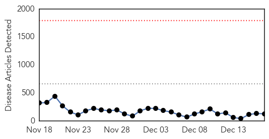
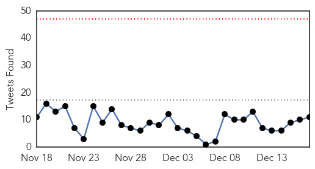

30 Day Trends
Web: 0 alerts, 0 warnings
Twitter: 0 alerts, 0 warnings
Top Articles:
- 1.000
- Experts: It was a busy, black-eye year for disease control
- 1.000
- Experts say 2014 was not the best of times for public health
- 1.000
- Experts: It was a busy, black-eye year for disease control
- 1.000
- Sierra Leone to Search Freetown Houses for Ebola Patients
- 1.000
- Ebola, enterovirus, errors: Experts say 2014 was not the best of times for public health
- 1.000
- Experts say 2014 was not the best of times for public health
- 1.000
- Experts: It was a busy, black-eye year for disease control
- 1.000
- Ebola total tops 18,000, with hints of slowing in Sierra Leone
- 1.000
- Mali Says No Ebola Case Remaining As Last Patient Recovers
- 0.999
- The Scientist Magazine®
- 0.999
- Kenya : Mali ends last quarantines, could be Ebola-free next month
- 0.999
- American doctor who recovered from Ebola will return to Liberia
- 0.999
- Ebola crisis: Sierra Leone starts house-to-house searches, bans New Year's Day celebrations
- 0.998
- Donors and WHO responded too slowly to West Africa Ebola outbreak - report - World
- 0.998
- Sierra Leone starts door-to-door Ebola awareness campaign ahead of Christmas
- 0.998
- Deadline looms for mandatory flu vaccine for NYC students
- 0.998
- Guinea Is Seeing More Ebola Cases: Can The Trend Be Stopped?
- 0.998
- House Searches for Ebola in Sierra Leone Capital
- 0.997
- Ebola preparations on track in Wales despite low risk, according to officials
- 0.997
- Ebola Threatens Millions With Food Insecurity
- 0.997
- Sierra Leone authorities go house to house in search of Ebola sufferers
- 0.997
- Politicians who played the Ebola fear card
- 0.997
- Ethiopians arrive in W Africa to fight #Ebola
- 0.997
- Ebola hiatus over, medical traffic with Nigeria resumes
- 0.996
- Houghton soldier back from Ebola mission to Sierra Leone
- 0.996
- Ebola survivors face critical problems
- 0.996
- Sierra Leone ramps up Ebola fight
- 0.995
- EU ships emergency Ebola supplies to West Africa
- 0.994
- Ebola centres overflow as Sierra Leone steps up fight
- 0.994
- Donors and WHO responded too slowly to West Africa Ebola outbreak - report
- 0.992
- Virulent flu strain merits vigilance
- 0.991
- Ebola outbreak: Signs of new cases slow in Sierra Leone
- 0.990
- Ethiopian Health Workers Arrive In Liberia To Help Contain The Deadly Virus, Government Wants To Stamp Out Ebola Before Christmas
- 0.990
- House Searches for Ebola in Sierra Leone Capital
- 0.989
- Teams searching for Ebola cases in Sierra Leone’s capital
- 0.987
- House searches for Ebola in Sierra Leone capital
- 0.987
- Guinean capital bans Christmas, New Year celebrations
- 0.987
- UN says #Ebola-hit nations at risk of hunger
- 0.987
- Cooperation with Africa must occur at earliest signs of crisis, Ban tells Security Council
- 0.986
- House searches for Ebola in Sierra Leone capital
- 0.986
- Medical exodus left country 'short'
- 0.985
- UN chief to travel to Ebola-hit countries—sources
- 0.984
- Health Teams Scour Sierra Leone Capital in Drive to Contain Ebola
- 0.983
- Sierra Leone to start house-to-house searches for Ebola patients
- 0.982
- $1 million state grant will help develop rapid Ebola test
- 0.981
- Nurses voice Ebola concerns
- 0.980
- Mayor addresses Batts' controversial comments
- 0.980
- EU Ministers Warn Turkey Over Media Raids
- 0.980
- Sydney police re-activate security operation
- 0.980
- Maryland budget shortfall is worse than expected
Showing top 50 articles...
Top Tweets:
- 0.988
- Ebola Update: 18464 confirmed probable and suspected cases of Ebola in 3 most affected countries. 6841 reported deaths. EbolaResponse
- 0.987
- Ebola case fatality rate for hospitalized cases is 60% in Guinea & Sierra Leone 58% in Liberia. Horrific - but lowish for Ebola Zaire.
- 0.880
- New Ebola update says 649 healthcare workers have been infected 365 have died. Fitting Ebola Fighters are Time's Person of the Year
- 0.829
- WHO Ebola report 18603 cases 6915 deaths 649 health care workers infected 365 health care workers have died http://t.co/aYIRin4n40
- 0.829
- WHO Ebola report 18603 cases 6915 deaths 649 health care workers infected 365 health care workers have died http://t.co/SfrIbzMdUG
- 0.718
- RT: Sierra Leone lockdown will not help halt Ebola: MSF http://t.co/ylwkBRHOTR Reuters Africa Ebola EbolaOutbreak
- 0.688
- New Ebola numbers from. 18603 known cases 6915 deaths. Case incidence has slowed in Sierra Leone. Good news. http://t.co/foF3hxTryb
- 0.598
- RT: Ebola outbreak: Sierra Leone announces house-to-house searches: Sierra Leone is due to mount ho... http://t.co/GrtX70CemH Eb…
- 0.547
- RT: Read the latest update on the Ebola virus disease epidemic in West Africa. http://t.co/SLGzyz2HMC http://t.co/jmFR7nrmjD
- 0.523
- CDC is assisting ministries of health other orgs to end ongoing Ebola epidemic in W. Africa. Learn the latest: http://t.co/NlGncSRQnW
- 0.508
- RT: Ebola EbolaOutbreak Ebola patient in Rome is recovering http://t.co/va7nXuP5gh
Web/News Articles
Tweets
Article Locations